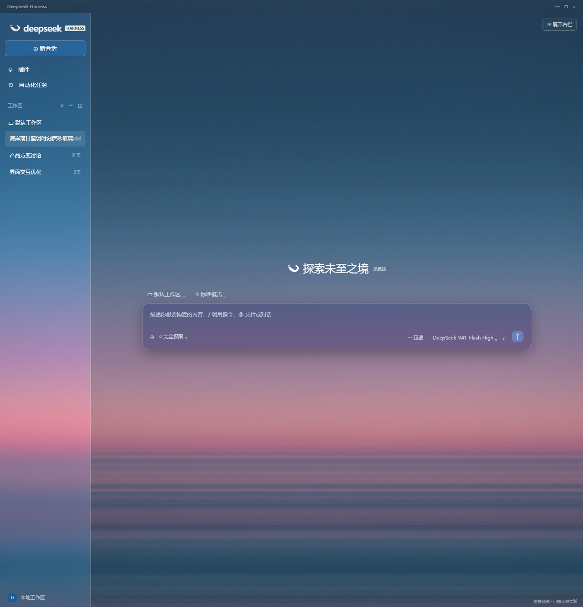
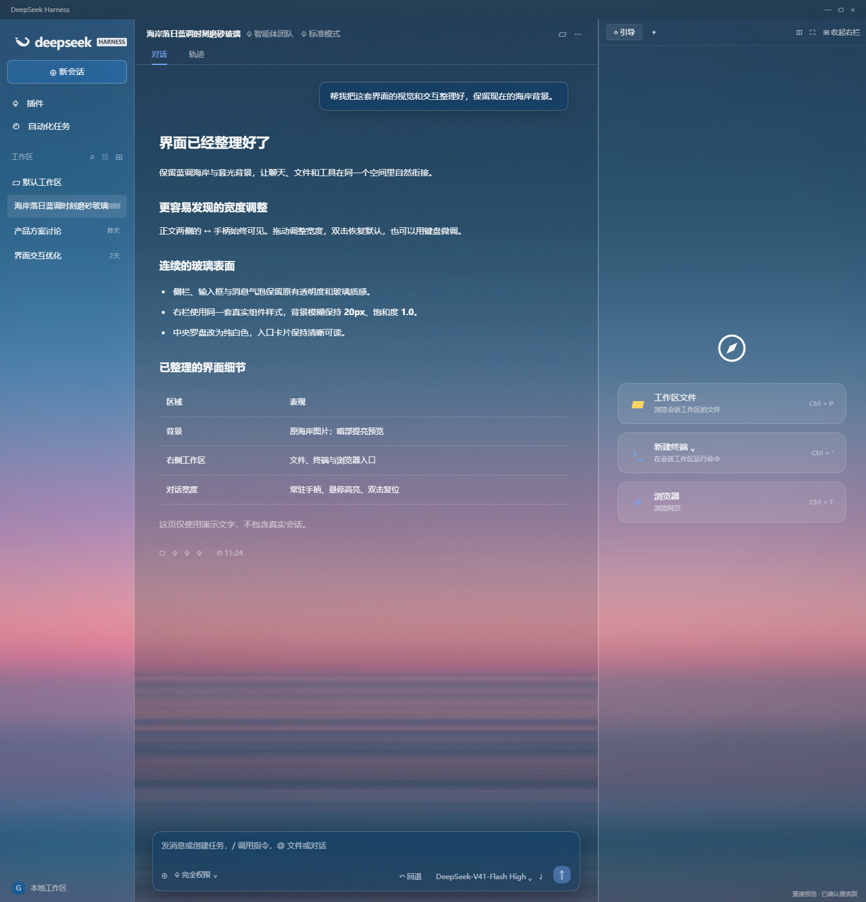
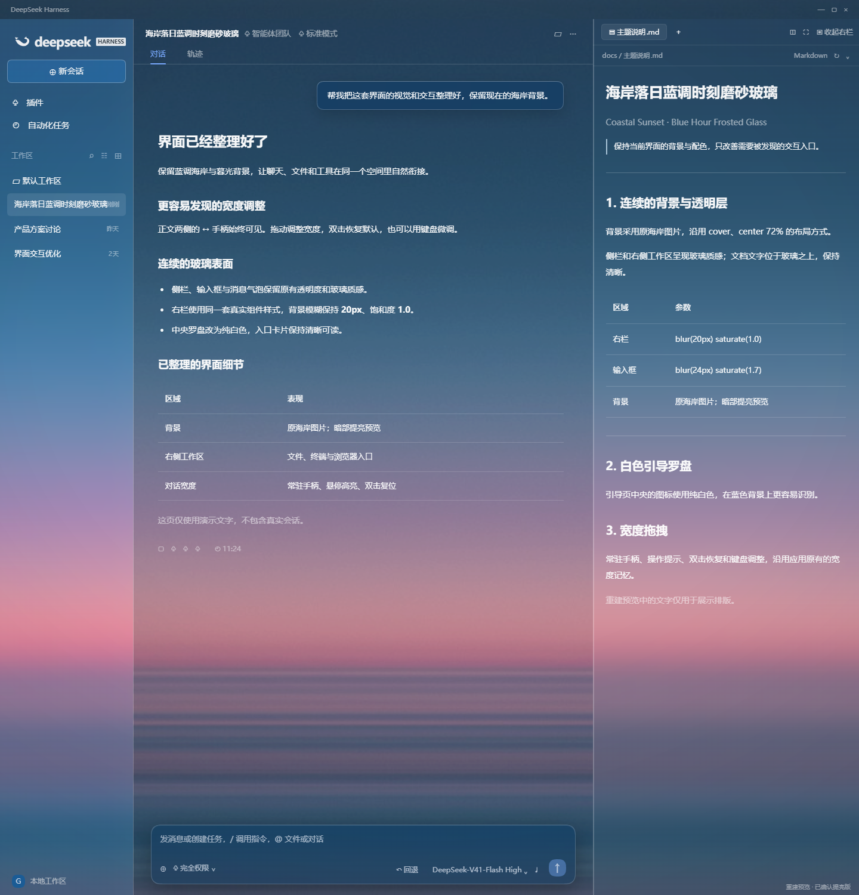

海岸落日蓝调时刻磨砂玻璃Coastal Sunset · Blue Hour Frosted Glass
浅雾蓝图集 · 大图展示
已确认的提亮版 · 与 0.1.3 安装包使用同一份主题样式。





HTML/CSS 重建预览，使用原海岸图片及发布包同源的 client.js；没有成图亮度滤镜。实际宿主窗口尺寸和内容会影响背景裁切与布局。
浅雾蓝图集 · 大图展示
已确认的提亮版 · 与 0.1.3 安装包使用同一份主题样式。



HTML/CSS 重建预览，使用原海岸图片及发布包同源的 client.js；没有成图亮度滤镜。实际宿主窗口尺寸和内容会影响背景裁切与布局。